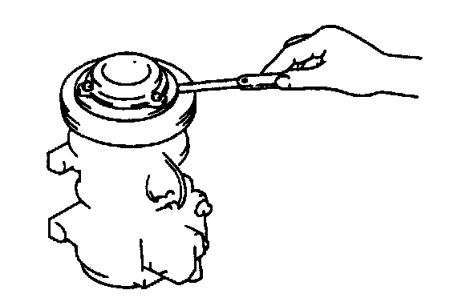

Compressor Clutch: Adjustments
MAGNETIC CLUTCH ADJUSTMENT
Adjust the clearance by using shims if necessary. Adjusting shims are available in the following thicknesses.
Adjusting shim size
0.1 mm (0.004 in)
0.3 mm (0.012 in)
0.5 mm (0.020 in)
Standard clearance
0.35 - 0.65 mm (0.014 - 0.025 in)